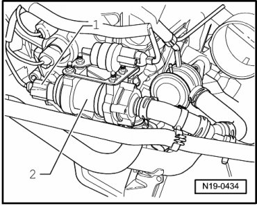
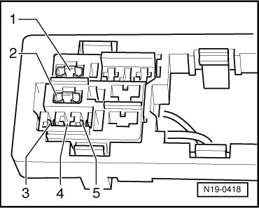

Coolant Pump, Checking
Diagnostic Procedures
Coolant Pump, Checking
Special tools, testers and auxiliary items required
• Multimeter (VAG1526) or Multimeter (VAG1715)
• Connector test kit (VAG1594)
• Wiring diagram
Test requirements
• Fuses in E-box (plenum chamber, left) must be OK:

• Motronic Engine Control Module (ECM) Power Supply Relay 2 (J670) must be OK, check:
• Auxiliary Engine Coolant (EC) Pump Relay (J496), -position A° must be OK, checking:
• Battery voltage must be at least 11.5 volts.
• All electrical consumers such as, lights and rear window defroster must be switched off.
• Ground (GND) connections between engine and chassis must be OK.
• Ignition switched off.
Test sequence
- Disconnect 2-pin connector - 1 - from Coolant Pump (V36) (- 2 -).

- Connect coolant pump to the B+ and Ground (GND) terminals of the battery using the respective adapter cables.
Pump must run.
If pump does not run:
- Disconnect connection between pump and battery.
- Replace Coolant Pump (V36).
CAUTION!
• The cooling system is under pressure.
• Danger of scalding when opening!
- Erase DTC memory of Engine Control Module (ECM) , Diagnostic mode 4: Reset/erase diagnostic data.
- Generate readiness code.
If pump runs:
- Disconnect connection between pump and battery.
- Remove Auxiliary Engine Coolant (EC) Pump Relay (J496) from relay carrier, position A5.
• Do not use metallic tools to pry off relays from relay carrier. The terminals could conduct electricity.
- Check wire between terminal 2 of relay carrier and terminal 1 of 2-pin connector of Coolant Pump (V36) for open circuit according to wiring diagram.

Wire resistance: max. 1.5 ohms
- Also check the wire for short circuit to B+ and Ground (GND).
Specified value: infinite ohms
- Check wire between 2-pin connector terminal 2 and Ground (GND) for open circuit according to wiring diagram.

Wire resistance: max. 1.5 ohms
If no malfunctions are found in wires:
- Now check voltage supply of Auxiliary Engine Coolant (EC) Pump Relay (J496).
- Connect multimeter to terminal 1 of relay carrier and Ground (GND) for voltage measurement.
- Switch ignition on.
Specified value: at least 10.0 V
- Switch ignition off.
If specified value is not obtained:
- Locate and repair open circuit using wiring diagram:
- Erase DTC memory of Engine Control Module (ECM) , Diagnostic mode 4: Reset/erase diagnostic data.
- Generate readiness code.
If specified value is obtained:
- Check wire to Engine Control Module (ECM) according to wiring diagram.
Checking wire to Engine Control Module (ECM)
- Connect test box to control module wiring harness , connect test box for wiring test.
- Check wire between test box and relay carrier for open circuit according to wiring diagram.
Terminal 5 + socket 48
Wire resistance: max. 1.5 ohms
- Check wire for short circuit to vehicle Ground (GND) and to B+.
Specified value: infinite ohms
- Erase DTC memory of Engine Control Module (ECM) , Diagnostic mode 4: Reset/erase diagnostic data.
- Generate readiness code.
If no malfunction is detected in the wire:
- Replace Motronic Engine Control Module (ECM) (J220).
Final Procedures
After the repair work, the following work steps must be performed in the following sequence:
1. Check the DTC memory. Refer to --> [ Diagnostic Mode 03 - Read DTC Memory ] Diagnostic Modes 01 - 09.
2. If necessary, erase the DTC memory. Refer to --> [ Diagnostic Mode 04 - Erase DTC Memory ] Diagnostic Modes 01 - 09.
3. If the DTC memory was erased, generate readiness code. Refer to --> [ Readiness Code ] Monitors, Trips, Drive Cycles and Readiness Codes.